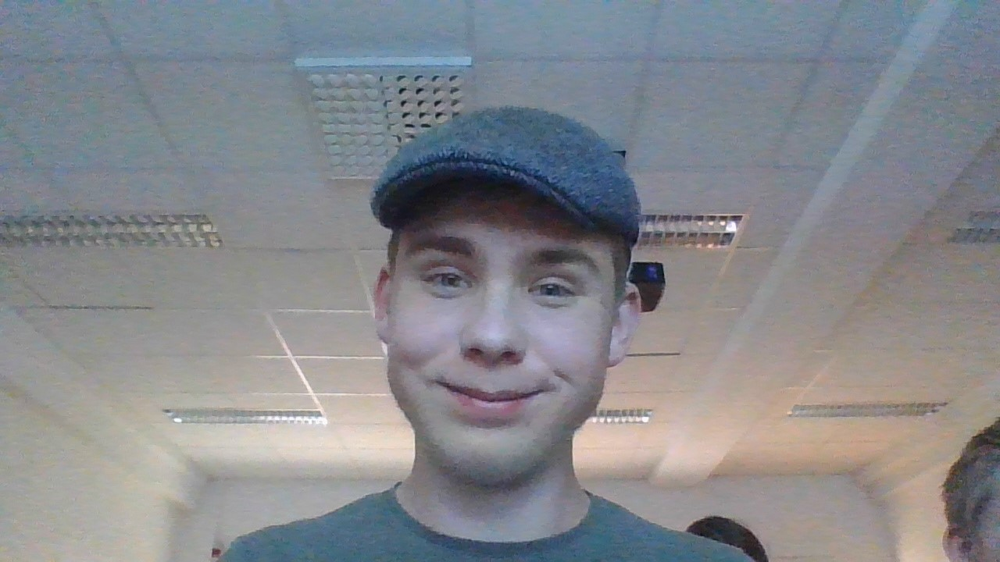

Mitt namn är Johan Jonas Abrahamsson. I denna stund som jag skriver är jag 17 år gammal.
Jag är en Pianist och har varit det i ungefär i 8 år. Jag kan t.ex. spel stycken som "Turkish March".
Här är en bild på mig:
Questions and Awnsers
| Hur lång är du? | Xcm lång |
| Hur mycket väger du? | Xkg |
| Vad gillar du göra på fritiden? | Spela piano och spela spelet Warhammer 40k |
| När gör du läxor? | Oftast på Lördagar |
| Vad heter de in din familj? | Min pappa heter Jonas, min mamma heter Anna och min bror heter Axel. |
| Vilken armé spelar du med i Warhammer 40k? | Till mesta dels Tyranids |
| Hur lång är du? | Xcm lång |
| Hur lång är du? | Xcm lång |
Om du vill se min Warhammer 40'000 armé så klicka här